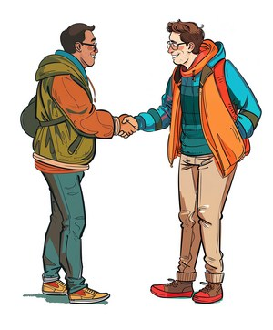

Wat leuk dan je ons gevonden hebt!
Zoals je misschien al hebt gemerkt: wij zijn een bruisende gemeente met een mooie mix van jonge gezinnen, veel kinderen en jongeren, volwassenen en een trouwe groep senioren. We zijn actief in Zoetermeer sinds 1977 en onderdeel van de Unie-ABC.
Elke zondagochtend hebben we om 10.00 uur een samenkomst in ons gebouw De Uitkijk, aan de Wattstraat 64 in Zoetermeer. Voor de kinderen is er een speciale Kids Club in eigen leeftijdsgroepen en voor de tieners is er elke 2e zondag van de maand een tienerdienst in de soos (bij binnenkomst links aan het eind van de gang). Na afloop is er koffie en thee en ruim gelegenheid om kennis te maken met onze gemeenteleden. In het Atrium hebben we een speciale "Connect"-hoek ingericht waar je meer informatie kunt vinden over onze kerk en waar ons welkomsteam klaarstaat om je vragen te beantwoorden of gewoon voor een praatje.
Stapje verder?
Ben je geïnteresseerd in het Christelijk geloof en wil je je graag wat verder verdiepen? Dan kun je eens vrijblijvend langskomen voor KringXL of misschien is de Alpha Cursus wel iets voor jou?
KringXL is een plek om samen het geloof te delen en te ervaren hoe het is om samen gemeente te zijn. Elke twee weken op dinsdagavond staat De Uitkijk open en is iedereen welkom. Vanaf 19.45 uur is er koffie en thee en om 20.00 uur starten we een laagdrempelig programma.
Er wordt in kleine groepjes doorgepraat over een onderwerp (vaak het onderwerp van de overdenking van de zondag ervoor) en er is veel ruimte voor het stellen van vragen. KringXL is volledig vrijblijvend, of je nu een enkele keer komt of trouw elke keer, je bent altijd welkom! Op onze agenda kun je zien wanneer de volgende KringXL is.
Heb je veel vragen over het geloof? Dan is Alpha wellicht iets voor jou! Alpha is een serie bijeenkomsten waarin je samen met anderen het christelijk geloof ontdekt. Elke bijeenkomst begint met een lekkere maaltijd, gevolgd door een inleiding over het christelijk geloof en de kleine groep. Van ‘Wie is Jezus?’ tot ‘Bidden: waarom en hoe?’, je ontdekt op een laagdrempelige en gezellige manier de basis van het geloof.
Na de inleiding ga je uit elkaar in kleine groepen om door te praten over het onderwerp. En echt geen enkele vraag of mening is te gek: de kleine groep is de plek waar je álles mag delen. En dat is Alpha! Een plek waar alle verhalen samenkomen, waar je alles mag zeggen, ongetwijfeld nieuwe vriendschappen maakt én (volgens 92% van de deelnemers) sowieso een goede tijd hebt. Alpha duurt ongeveer tien weken en een weekend weg en is in de meeste gevallen gratis. Soms wordt er een kleine (vrijwillige) bijdrage gevraagd voor het weekend weg.
Er is een Alpha cursus voor volwassen en eentje speciaal voor jeugd. Hier lees je er meer over, ook wanneer de volgende Alpha begint!